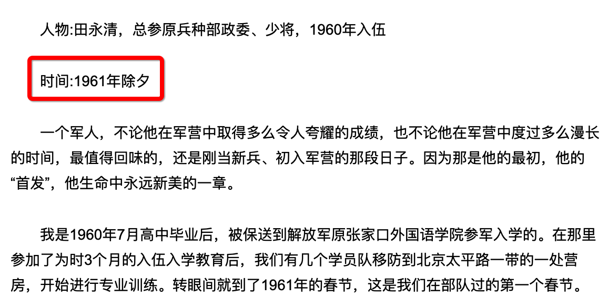
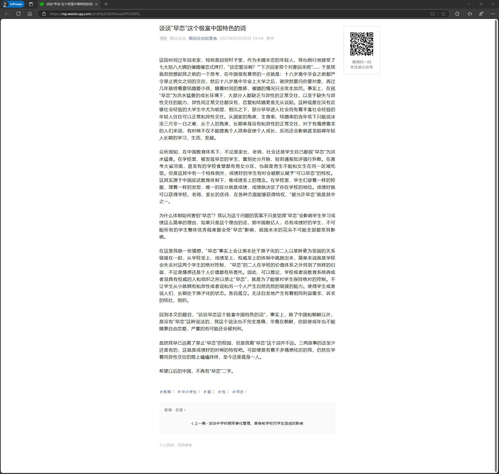

文献档案馆
更新历史
| 日期 | 版本 | 作者 | 更新内容 |
|---|---|---|---|
| 2025-03-01 | Shimada Mizuki | 添加文章。 |
文字
「早恋」一词的前世今生
查看全文
发布于 2024-01-06 19:50・IP 属地北京
原帖地址
展开图片
这应该是网上第一篇比较系统得讲述「早恋」一词由来的文章了
何为「早恋」？
「早恋」一词，是近代中国大陆为了配合「计划生育」政策提倡「晚恋晚婚晚育」的宣传需要，而发明的特色本土词汇，最早出现于1960年。是其超限执行的一种体现。
早恋简史
1955年7月，马寅初发表《控制人口与科学研究》，阐述了他的人口控制理论。
此后，计划生育一直处于小规模提倡状态，由于这段特殊时期的诸多原因，发生了反复横跳。
58年，开始了大跃进，提倡「人多力量大」。于是「计划生育」暂被搁置，而随着59-61年三年困难时期的到来，人口控制又成了迫在眉睫的刚需。
1960年前后，「计划生育」重新提上日程，为了配合造势，社会上开始出现了「晚恋，晚婚，晚育」（提倡三晚）的宣传口号，与之相对的「早恋」和「早婚早育」成为了打击的对象。
1970年，「计划生育政策」大规模全面铺开，在提倡三晚的大环境下，「早恋」成了人人喊打的过街老鼠。「早恋=犯错误」成为了一种社会共识。
1977年恢复高考，和「早恋」没有直接关系的「高考」，顺理成章得成为了「反对早恋」的又一理由，其错误影响一直持续到现在。
纵观人类历史，从未有过「早恋」的概念，因为这个概念本来就荒唐透顶，恋爱是人类的本能，是基本的人权和自由，何论早晚？「早恋」的诞生，本就是一种层层加码的过度执行，而后学校家长以「影响高考」为由反对学生自由恋爱，更是无稽之谈，他们从没有想过所谓的「反对早恋」只不过是一种郑智正确的延续，一种生活惯性罢了。更是一种没有独立思考能力的体现。
以下内容是我对「早恋」一词出现时间点的考据过程
关于「早恋」一词的考据
首先引用一段
“早恋”是1960年代产生的中国大陆本土概念。20世纪上半叶，中国大陆乡民不反感16岁谈恋爱。1960－1980年代，大、中学生恋爱被视为不珍惜学习机会；1990年代至今，中学生恋爱仍难以被家长和教师容许。——闵乐夫. 对“早恋”的再认识及教育对策. 中国性科学.
早恋就是我国的特色词汇，这点相信不用再赘述了
闵乐夫先生指出，早恋一词产生于「1960年代」，但根据我的考据，这个“年代”可以去掉，时间点基本就在1960年前后
何以见得呢？
来，我们先看看这部1958年拍摄的电影《柳堡的故事》
这部电影也许你没看过，但是它的插曲就是大名鼎鼎的《九九艳阳天》
其歌词写道：九九那个艳阳天来哟……十八岁的哥哥惦记着呀小英莲
男主角18岁，妹子16岁，标准的早恋
由此我们可以得知，至少在1958年，社会对所谓的早恋，并没有普遍的抵触情绪，否则这部电影早就被举报下架封杀了
在我上一个关于早恋的回答里，我认定的反早恋时间是70年代，原因是我当时能找到的最早的资料也就是1974年的一篇调查报道《迎着斗争的风浪越唱越嘹亮——常熟县白茆山歌的调查》
当时我得出的结论是，早恋是人口控制的副产品
为了减少人口，需要计划生育 为了计划生育，推行晚婚晚育 为了晚婚晚育，需要禁止“早恋”
现在看，逻辑全对，但时间不准确
70年代不是禁止早恋的开端，而是全面推广的时间
我一开始之所以没能找到太多资料
其实是因为我陷入了思维误区
我一直围绕「早恋」当关键词，但实际上我错了
「反对早恋」是一种低情商的说法，高情商的说法应该「提倡晚恋」
当年的主流口号是「提倡三晚（晚恋，晚婚，晚育）」 ，而不是「反对三早（早恋，早婚，早育）」
所以当我把关键词从「早恋」变成「晚恋」后，我找到了更多的作证

以70年代为背景的小说《山楂树之恋》，也描述了当年的提倡三晚
70年代的资料，真的不少
而更早的资料就比较珍贵
之所以我能锁定1960年这个年份（而不是同为60年代的1969）
是来自于一名老兵的回忆
而这名老兵正好是1960年入伍的

再补一个时间戳，50年代后期，模糊了一点，但基本也大差不差
1958年，有早恋内容的电影火遍全国
1960年，一名战士响应了提倡三晚的号召
至此，我们基本上可以断定：反对早恋（提倡晚恋）的社会共识，就是始自1960年前后
「早恋」和「高考」
可以明确的说，高考只是一个借口，因为反对早恋最猛的年代，高考早就停了
早恋和高考的关系，跟「考不上清华就因为玩游戏」属于同一类，都是思想滑坡
有人会较真说「失恋会影像学习效率」，对么？对。但是拉肚子也影响啊，难道不吃饭了？被「同学霸凌」呢？被「老师霸凌」呢？你要知道「失恋」一般几个月就走出去了，如果被老师当成班里的反面典型，你可能整个学生时期都得低着头。那些轻生的孩子有几个是因为早恋的？不都是老师和同学的霸凌么？
所谓「失恋会影像学习效率」的理由根本经不起推敲
可惜这个错误的理念根深蒂固，很多大人是真信的，很多孩子也跟着信……唉
说完了前世，我们看看今生
早恋的今生
改开之后，早恋是否被慢慢淡忘了呢？
并没有，至少在2009年，早恋还曾经被写入法典之中，并且被定性为极其严重的不良行为
奥运都开完了，还整这出，我是没想到的
2009年，黑龙江省十一届人大常委会第十二次会议对《黑龙江省未成年人保护条例》进行了修订，在修订中增加了有关未成年人“早恋”内容的规定： 法规表决稿第十三条修改为：“父母或者其他监护人应当对未成年子女或者被监护的未成年人的下列不良或者违法行为进行批评、教育、制止和矫正…… (九)【早恋】、非法同居和吸毒、卖淫、嫖娼……”
再补一个冷知识：影视行业里，“早恋”仍然是绝对的禁区。至到今天为止仍然是
至于反早恋的荼毒
我觉得其他人的回答说的够多了，我不再赘述
另外，渲传口为何从提倡三晚，变成了提倡二晚？人口控制是否是唯一的原因，其实都值得深挖，但想了想《黄金时代》，我决定不展开讲了，免得这个回答又被限流
搞点知乎遗风容易么？
-以上-
纸沾水为何变透明
查看全文
展开图片
回答1
来自创作者x9lJldJh8O 2020-04-01
因为纸的纤维之间本来是有很多间隙的,间隙中间充满了空气,所以正常的纸看起来是不透明的,而沾了水之后水填充了间隙,而少量的水是透明的,所以纸沾水后是透明的。
空气的折射率小，光线基本走直线，被纸张纤维挡住，所以看起来不透明。而水的折射率较大，在遇到水界面时，光线反复走折线，绕过纸张纤维的阻挡，所以就看到了透明效果。
回答2
来自创作者yWgkTBpWV7 2019-08-29
形象来说：
就像毛玻璃沾水会变透明一样。水可以填充纸表面微小的凸凹。
具体：
因为纸的纤维之间本来是有很多间隙的,间隙中间充满了空气,所以正常的纸看起来是不透明的,而沾了水之后水填充了间隙,而少量的水是透明的,所以纸沾水后是透明的。
空气的折射率小，光线基本走直线，被纸张纤维挡住，所以看起来不透明。而水的折射率较大，在遇到水界面时，光线反复走折线，绕过纸张纤维的阻挡，所以就看到了透明效果。
油是一个道理，更亮是因为分子较大吧，油的折射率也较大
2024，你“接”住“抽象”了吗？
查看全文
2024-12-18 13:49 原贴发布
原帖地址
展开图片
今年B站选出的年度弹幕是“接”，小红书选出的年度关键词是“抽象”。这不免令人有些错愕，因为早在2024年之前，“接”这个字就开始在小红书、抖音等平台广泛流行，而“抽象”作为一种网生亚文化，更是从B站的鬼畜二创开始发扬光大。
追根溯源，会发现不论是“接”还是“抽象”，如今的语义、使用场景都与其诞生伊始发生了流变，并且在进入到不同社区之后与社区的内容风格进行了融合。但融合到最后，结果并不是社区之间差异越来越大，形成社区平台的“内容护城河”，反而是越来越抹平壁垒，让大众产生“原来冲的是同一片浪”的感觉。
当一个词从大众不自觉使用到被主流语境认可的“年度热词”的高度，意味着它已经在大众传播中剔除掉相对负面的部分，遗留下有趣的、相对积极的解读空间。而追溯这些词的词义流变过程，也是观察互联网社区文化变迁的一个独特视角。
从“接”好运到什么都“接”
好事发生，先来“接”。
在B站所陈列的对“接”的使用场景中，考试上岸、入职升职、表白成功、欧气爆棚，甚至是看到美好故事时，用户都会纷纷发出“接”字弹幕。不难发现，这里“接”的都是他人身上发生的好事，是相对具体的事情。
如果从中提取出某种年轻人的社会心态，或许在“单纯指望天上掉馅饼”之外，也可以有相对积极的解读。
比如有微博博主提到，“选择是由人的，而‘接’是由天不由我，只是我有足够的配得感……它是一种姿态强调，我知道幸福具体指什么，但你可不要忽悠我，说努力就能得到。如果幸福是摇号制，那我理应站在原地就得到它。”
这的确是非常当下的青年心态折射，是对上一辈“努力就会成功”叙事的祛魅，这一代人不再轻易相信显见的“PUA”。反而对意外成功有着很强的配得感，不让自己平白内耗。
但延展到其他社区中，有时“接”，则不一定是接某个具体的对象，这种配得感强的心态会往“玄学”的方向偏移。比如在短视频平台评论区里，有时会出现与视频毫无关系的“接”。只要放一张财神爷的图片，或者评论诸如“财富接不接？”“健康接不接？”等句子，有时就会有大量用户跟风回复评论，“接”。
并非跟风者众就代表所有用户都喜欢这一行为。打开短视频平台搜索“接是什么梗？”就会发现大量视频都在表达对这种“什么都接”的风气的不满。
不满的心情很容易理解。如果说基于某件具体而微的幸运之事而表达艳羡之情，那是人之常情，但只要冒出来财神爷就要“接”一下，只会让人感觉这个世界就是一个巨大的“人机互动场”，怀疑自己是不是不小心通过了图灵测试的异类。
跟风评论之人的心理活动也不难理解。在中国，本来也还有相当广泛的迷信人群。据2024年的一篇论文显示，在随机抽取了650名大学生进行调查之后，发现大学生迷信总分平均值是2.4分（满分5分），迷信心理中等的大学生最多，且城市大学生的迷信程度还显著高于农村大学生。
喜欢发“接”的用户并非对其诉诸过高期待，只是比起烧香拜佛、算命卜卦，“接”一定是成本最低的行为，只需要轻轻打字不消一秒便可以完成一次“赛博祈愿”。而且，一旦好事当真降临，便容易与发送“接”的行为主观关联，成为发帖者与其他用户相互印证，由此形成了一轮又一轮心理暗示强循环的主观证据。
这个过程体现在“接男宝”现象上尤为明显。2022年，毒眸曾撰文（点此阅读：《人在小红书，颜值被打10分》）分析过小红书上“接男宝”频出的现象，意指有用户发帖表示自己诞下男婴，评论区旋即会出现一批“接男宝”的评论，希望自己也能怀上男孩。
据字母榜报道，2019年抖音上就已经有了“接男宝”现象。一位妈妈在抖音上发布“接男宝”视频，声称自己生下的6斤男宝宝，就是在抖音上接的。随即引发评论处1.7万个准妈妈“跪求接男宝”。
值得肯定的是，尽管如今还有不少“接男宝”的视频或帖子存在，但各个社区中已经多了不少反对、劝诫的声音。网络平台的发声终究还是现实观念的体现，很难指望在现实观念发生根本性扭转之前让网络发声平息，但有更多用户愿意主动站出来反对，终究是推动转变的一股力量。
当“抽象文化”变成“万物皆可抽象”
再看小红书选择的“抽象”二字。
小红书官方发布了一则视频，如此解释站内的“抽象”：“抽象是离题万里但万事和为贵的大智慧；是驴唇对马嘴，真朋友才会给出的安慰；传播学家说这叫预期违背，网友摆摆手说，害，不过是已读乱回。”
在小红书的理解中，“抽象”侧重体现在用户之间的互动，是用户精神状态的一种写照。但UGC内容之外，今年在小红书上火热的讨论对象也不乏可被冠以“抽象”之名的。比如《门前宝地》刚刚上线时的向佐，彼时他还没有开始带货，其“抽象”往事在小红书被大量研究、品鉴。又如在小红书直播的李诞，经常会有姐妹投稿奇闻轶事，令人直呼“抽象”。
不难发现，2024年的“抽象”，几乎可以成为所有具备反差感、令人感到迷惑的行为与事物的统称。这与“抽象”作为一种亚文化诞生时的语境发生了极大偏离。
毒眸曾撰文（点此阅读：《郭老师和被嫌弃的抽象网红的一生》）仔细梳理“抽象文化”发展源流。其最早诞生于斗鱼的6324直播间，一个叫“抽象工作室”的游戏主播团体。当中最知名的主播莫过于孙笑川，一段对观众连爆5分钟粗口的视频成为了“抽象圣经”，其本人也一度被称作“抽象教父”。
本身是圈层文化，但随着圈层中的受众不断在外部事件中刷屏，孙笑川的大名得以路人皆知。加上在B站等平台的鬼畜二创视频，让抽象文化更具生命力。
而当“搞抽象”成为一个可靠的流量标签，一个又一个“闪耀”的名字陆续加入抽象大军——带篮子、药水哥、giao哥、“东北往事”中的刀哥虎弟……这些人抱持着“活儿要狠，言论要语不惊人死不休”的信念，在屏幕前不断丰富大众对“抽象文化”的认知。
被冠以“抽象”之名的人越来越多，其中也发生了受众人群与赛道的细分。比如郭老师、三梦奇缘、完颜慧德等人，更偏向于“gay icon”的路线；而B站的鬼畜二创则仍以电棍、炫神、丁真、范小勤等人为主；“牢大”与“坤坤”的梗，甚至在低龄青少年群体中更加流行。
但在圈层之外，越来越多公开的名人明星或主动或被动地加入到抽象行为的行列中去。除了前文所说的向佐，黄子韬、黄磊、大冰、听泉赏宝等名人，都曾被冠以“抽象”之名。
2024，几乎可以称之为“抽象新元年”。
当它抽象重新理解成某种以“不严肃不正经”为核心要义的幽默精神时，抽象文化中缺乏人格尊重的暗面越来越少被提及，甚至被主流语境逐渐剔除在外。
这是热梗热词流通的必然路径。典型如2021年入选十大网络流行语的“yyds”，在最初阶段能成为口口相传的热梗是因为某因赌博下注而坐牢的游戏主播在赛事解说时极为沉浸，具有强烈的戏剧效果。但当一个梗具有较强的泛用性之后，往往不会被大众在意其源流，且逐渐剔除掉语义中的负面成分，成为大众层面时髦又新鲜的“社交货币”流行开来。
圈层文化共作一体
不论是“接”还是“抽象”，其广泛使用并作为年度关键词出现，都体现出了在目前的互联网语境下，圈层文化逐渐互通、杂糅，让上网冲浪的人们逐渐享有一片共冲的海域。
观察B站的年度弹幕，2022年的“优雅”来自当年大热动漫《间谍过家家》里角色的口头禅，2021年的“破防了”原先是游戏术语，此时还有较为明显的圈层属性。而去年的“啊？”与今年的“接”则并非来自圈层。
很难追溯到最早使用“接”的时间点，但与过去互联网转发锦鲤的热潮应有一脉相承之势。锦鲤转发热潮在2018年达到巅峰，然后逐渐偃旗息鼓，总体特征和“接”一样，是跨平台、跨人群流行的。
而“抽象”到如今同样如此，能让用户感到抽象的人和内容会在全平台流通，尤其是当UGC的内容创作中出现广泛的“抽象整活”取向时，它就更加没有圈层的壁垒。一个广为流传的说法是，“熬夜背梗也敌不过抽象天赋型选手”，这句话生动形象地展现出了“抽象”需要的是灵光一现，而非复刻与总结。
在AI生成视频出现之后，“抽象”又迎来了焕发新生命力的机会。如今许多平台中都会出现，基于某张照片或某段视频，由AI向后自主延展，其中人物的行为逻辑与事件走向往往不合常理，从而凸显幽默，产生“抽象”效果。
但每当有博主拍出比AI更加逆天的剧情时，就会有“AI终究还是取代不了人类”的评论出现。毕竟，AI是基于过去经验的推理，而人类如果执意“抽象”，总可以比AI做得更加不合逻辑、不可理喻。
可以预见的是，“抽象”在未来很多年里都会是被高频提及的热词。它未必是某种用户精神状态的集中体现，但所涵盖的内容之广，注定其生命力极为旺盛。
早些年，人们无法定义抽象，这让抽象在向外传播时形成了理解门槛。到如今，人们也还是无法定义抽象，但正是因为这种无法定义，让它还有无限的想象空间。
免责声明
以上内容为用户在观察者网风闻社区上传并发布，仅代表发帖用户观点。
发表于北京市
搞笑达人许杨君单月涨粉408万；快手电商日活破1亿｜短视频5月报
查看全文
2020-06-12 10:35 原贴发布
原帖地址
展开图片
5月行业报出炉！
行业动态方面，抖音和快手聚焦于电商直播，再迎新人入场。快手携董明珠开启卖货3小时3.1亿销售额；抖音陈赫直播带货首秀卖出8200万，黑脸V、惠子等头部达人也加入直播电商大潮。
另一方面，阿里推出vlog产品“粗盐”持续发力；好看视频全域日活1.1亿、打通爱奇艺号。此外，资本方面再度迎来融资热，共有3起投融资事件。
平台数据方面，纳入统计的快手、微视、西瓜视频3个平台中，本月破千万播放量的视频个数达1107个；抖音点赞数方面，5月有4个视频点赞数超过了千万。
粉丝增长方面，快手上榜达人涨粉均破百万，搞笑达人“许杨君”涨粉408万，登顶涨粉榜第一。
★
正文
Part 1 数据榜单
5月，场妹统计了快手、微视、西瓜视频三大平台的视频播放量情况。
此外，场妹还统计了快手平台5月的粉丝数增长情况，并选取粉丝增长数TOP20的达人进行分析。
一
单个视频最高播放量1.3亿
5月，三大平台最高播放量视频都在千万以上，最高播放量来自快手“中国政府网”发布的视频，播放量达1.3亿。
微视的最高播放量2529万，是由“冰城巡特警”发布的视频。
西瓜视频最高播放量2441万， 发布者是“物理雷老师”。该达人是一名知识类内容创作者，发布视频主要内容是通过选取一些生活中受关注度高、或者趣味性十足的事件为案例，来用物理的方法进行讲解。
二
1107个视频播放量破千万
5月，三大平台总共有1107个视频播放量超过了千万。其中快手占比最高，共1102个，微视3个，西瓜视频2个。
有2838个视频播放量在5百万-1千万之间，其中快手2812个，微视16个，西瓜视频10个。
视频播放量在1百万-5百万区间的视频共15350个，快手15077个，微视152个，西瓜视频121个。
总体来看，相较上个月，5月快手各个区间的高播放量视频数均有所提升；微视各区间播放量出现明显下降，西瓜视频数据持平。
三
抖音4个视频点赞数破千万
5月，在统计的抖音top1000个视频中，点赞数破千万的视频有4个，对比4月减少了5个。
点赞数在5百万-1千万区间的有37个， 较4月减少了37个，以当月受关注较高的社会新闻类视频居多。
3百万-5百万区间的有60个，较4月减少了96个；1百万-3百万区间的有395个，较4月减少了366个。
点赞数破千万的视频中，除排名第三是由明星郑凯发布的视频外，其他均为官媒和政务类账号发布的视频。
自开通抖音账号以来，郑凯已经发布了多条点赞破百万视频，搞笑幽默的视频内容得到了许多用户的喜爱。
5月21日，郑凯苗苗官宣结婚，一组甜蜜的结婚照惹得网友纷纷大喊“甜度超标！”“吃狗粮吃饱了！”截止至6月9日下午15时，该视频点赞数已突破1400万。
四
快手最高涨粉408万
5月，快手共3位红人涨粉超过300万，其中一位涨粉超过400万。
排名第一的是搞笑达人“许杨君-）”，本月涨粉408万。截至6月11日，许杨君的总粉丝数已经达到了1004万。
许杨君的视频内容以吐槽为主，如吐槽那些沙雕生活小妙招、辣眼睛的土味视频等，犀利的吐槽加上“戏精上身”的表演，吸粉无数，多个视频播放量超过千万。
上个月排名第一的和平游戏主播“牧童”继续呈上升态势，5月涨粉365万，排名榜单第二。
近3个月来，他在快手粉丝增长了将近2000万，如今已进入粉丝超三千万的大主播行列，目前粉丝总量已超过3400万。
涨粉第三的是白小白《最美世界》，单月涨粉312万。
Part 2 行业热议事件
一
京东牵手快手
5月27日，京东与快手宣布联姻，针对供应链、品牌营销、数据能力共建等领域达成合作，快手用户可以在快手小店购买京东自营的商品，且无需跳转。
京东牵手快手的消息一出，很快引起业内的热烈讨论
各取所需、深度融合，双方牵手意味着电商与直播平台之间的壁垒将被逐步打破，开启了内容平台与电商平台合作的新思路。
作为一个内容平台，快手在电商领域发展迅猛，但在供应链方面却始终有短板。通过和京东的合作，快手可以获取强大的供应链支持，完善平台的供应链体系。
另一方面，京东需要借助快手进击下沉市场。下沉市场用户具备巨大的电商消费潜力，不管是社交电商起家的拼多多，还是主打内容电商的快手，这两家深耕下沉市场的平台都证明了这一点。
与快手战略合作，京东不仅能更进一步触及下沉市场用户，同时还能切入直播电商。
据悉，双方合作将在618正式落地，6月16日到18日期间，部分快手达人直播带货的商品将来自京东自营。
（详情可见：618直播电商大战打响！快手联姻京东，淘宝请了300位明星......）
二
星图上线直播业务
5月14日，巨量引擎旗下的星图平台正式宣布上线“直播业务”。
汇聚抖音、今日头条和西瓜视频多平台的主播资源，星图的直播业务包括精准达人推荐、在线下单、营销数据分析等功能，可为品牌商家、MCN机构和达人提供全链路、智能的直播内容交易服务。
目前，品牌方和商家在登陆星图官网后，可通过“达人广场”选择“直播主播”看到抖音主播的接单广场。
直播交易流程和短视频交易相同，用户可在主播广场筛选合适的达人主播，选择添加或进入页面后购买主播并填写任务要求，即可完成下单。
据悉，本次上线为1.0版本，前期仅开放抖音主播，且入驻条件为粉丝数大于50万、且30天平均看播人数需大于2000人。
关于粉丝数低于这个量级的达人能够带货，或者会不会受到影响，目前官方也尚未给予解答。
（详情可见：抖音直播带货要报备了！星图新增直播业务，达人1小时报价25万......）
三
直播带货再迎新人入场
5月又有多位明星和达人开启直播带货。
5月16日晚20点，陈赫准时出现在抖音直播间里，主持人朱桢任直播搭档宣布“有东西”直播间正式成立，开启了自己的首次带货活动。
当晚尹正、孙艺洲、李晨等多名明星达人来到陈赫的直播间，还送出“火箭”表示支持，已经转型“带货主播”的罗永浩更是送出豪礼“嘉年华”为陈赫助力。
据新抖数据显示，当晚陈赫的直播带货活动共持续时长4小时16分钟，涵盖零食、面膜、日用品等30件商品，累计观看数超过5098万，收获990万音浪，直播交易总额超8200万元。
5月28日晚8点，抖音创意视频达人“黑脸V”也迎来了抖音直播带货首秀。
据飞瓜数据显示，“黑脸V”整场直播持续了4个多小时，累计观看人数达2200.3万，人数峰值达67.3万，收获音浪数293.2万，累计涨粉14.2万，助力“黑脸V”抖音粉丝数突破3千万。在直播带货上，当晚共计销售35款商品，总销售量达到449.4万。
5月29日晚7点半，平台另一人气主播“惠子ssica”也迎来抖音直播带货首秀。据飞瓜数据显示，整场直播持续4个多小时，总观看人数达619.3万，人数峰值达15.4万，预估销售总额为218万。
（详情可见：抖音技术流达人“黑脸V”直播首秀：单场带货449万，卖得最好的是螺蛳粉）
Part 3 市场动态
01
快抖动态
5月份，快手和抖音依然动作频频，快手电商宣布日活突破1亿，推出“616品质节”；抖音小店开放个人入驻，发起618狂欢秒杀节......
1.快手
1）快手电商日活突破1亿
5月6日，快手举办“快手电商生态服务商启动大会”，据其电商副总裁笑古透露，截至目前，快手电商日活突破1亿，有超100万的账号拥有潜在经营行为。
2）董明珠快手直播带货3.1亿
5月10日晚，董明珠在快手直播带货。
当晚，董明珠只现身了半小时，随后就因为有其他采访安排而离开了直播现场。直播3个小时，销量达到3.1亿。
3）快手电商2020年GMV目标调高至2500亿
5月13日消息，据媒体报道，快手直播电商业务在2020年的GMV目标为2500亿。而抖音直播电商的GMV目标也高达2000亿。目前，快手和字节跳动均未有回应。
4）快手推“618电商狂欢月”
5月15日消息，快手将推出首个平台级的电商狂欢月活动——618电商狂欢月。
本次活动分为"1个大事件+6大主题季+4大创新活动"共11个营销模块。覆盖3C、汽车、美妆服饰、亲子等全行业品牌。
2.抖音
1）抖音小店开放个人入驻
5月7日，抖音小店开放个人身份入驻，可入驻服装、鞋靴、运动户外、厨具四大行业，不需要营业执照即可申请，但需缴纳500元保证金。
2）抖音发布娱乐测试类小程序关闭支付公告
5月11日消息，字节跳动小程序团队于近日发布了关于娱乐测试类小程序关闭支付公告。
公告中称，为规范相关虚拟支付管理，现要求娱乐测试类小程序针对抖音端去除支付功能。新上线小程序即日起不可付费查看内容或获取服务，已上线小程序需于5月15日之前完成修改，逾期将面临下架。
3）抖音回应快手起诉侵权
5月13日，针对快手起诉抖音侵权并索赔500万元一事，字节跳动回应称，尚未收到法院通知，具体情况还在了解中，头条、抖音一贯支持公平公正的竞争环境。同时，字节跳动表示曾遇到过搜索自家产品，出现的结果却是快手的情况，也因此向快手发起诉讼。
4）巨量星图推出以内容营销为主题的618狂欢节
5月19日消息，巨量引擎旗下巨量星图平台推出“聚星节”，为各大品牌带来一场内容营销主题的618狂欢节。
活动从5月18日持续到6月18日，现已陆续召集“祝晓晗”“柚子cici酱”“仙姆SamChak”等头部达人加入，更多美妆、教育、美食等垂直行业达人也将参与其中，为客户提供优质的内容创作力，并有超多福利助力企业玩转内容营销。
5）抖音上线二次元“元气学院”
5月22日，抖音以“助力二次元创作者实现创作梦想为理念”，上线二次元元气学院。
活动开设5大主题班级，设置“元气特训”和“元气冲刺”两个比赛阶段，以“短视频创作+直播挑战”的形式选出最具元气的创作者，并通过明星大咖助力、线上流量曝光等形式帮助创作者实现创作梦想。
6）字节跳动将非中国业务管理决策转移到海外
5月28日消息，相关知情人士称，字节跳动最近几个月低调采取了一系列行动，逐步将国际业务的决策与研究职能部门转移到海外。这一战略不仅针对面向海外用户的TikTok，还针对字节跳动其他不是以中国为中心的海外业务，包括印度社交软件Helo等。
另外，字节跳动已经扩大了TikTok在加利福尼亚州山景城的工程和研发业务，并展开一系列人事活动。
7）抖音发起618直播秒杀狂欢节
5月29日，今日网红发现抖音站内上线了“直播秒杀狂欢节”活动，为超大型年中直播带货活动，平台将投入亿级曝光、价值千万流量奖励。
活动日期为6月1日到6月21日，共分为3个阶段，面向所有主播、各个行业的商家以及产业带商家和达人。
8）抖音5月收入同比增长近10倍
6月6日，Sensor Tower周五发布数据，抖音5月营收继续在全球非游戏类APP中居冠，当月实现营收9570万美元（约折6.8亿元人民币），是去年同期的10.6倍。
此外数据也显示，抖音5月营收主要来自中国国内，占比约89%，国际市场上，美国和土耳其两个国家领跑，贡献营收分别占总收入的6.2%和1.2%。
02
其他平台动作
抖音和快手之外，其他平台也有所动作，好看视频打通爱奇艺号；阿里推出Vlog产品“粗盐”；网易严选也开始在全网招募主播、机构......
1）好看视频全域日活1.1亿
5月13日消息，在2020百度移动生态大会上，百度称2019年好看视频每天服务用户数1.1亿，每天总时长达40亿分钟，好看视频独立App日活跃用户数已突破3千万。
此外，爱奇艺号与同好看视频宣布双方实现账号关联及发布打通。创作者只需在其中一个平台上传视频内容，就可以实现双平台一键同步分发。
2）阿里推出Vlog产品“粗盐”
5月13日消息，阿里正在秘密冷启动一款名为“粗盐”的Vlog产品，目前已经开启内测。
据悉，“粗盐”的产品开发者为卓易畅游（北京）科技有限公司，据企查查显示，该公司的大股东为杭州宝轩投资管理有限公司，高管之一为阿里巴巴集团副总裁俞思瑛。
3）B站上线“美妆踢馆赛”原创视频活动
5月21日消息，B站于近日将上线“美妆踢馆赛”原创视频活动。
在5月22日到6月30日活动期间，用户可通过上传大于30s的中国妆相关的原创视频，选择活动tag#我眼中的中国妆#，即可参与活动。同时，获得人气TOP1的UP主将获得首页Banner及开屏曝光。
4）网易严选全网招募主播、机构
5月26日，网易严选发布“星驰计划”，计划面向抖音、快手、微博、淘宝等全网招募1000名优质红人主播、100家MCN机构。
据网易严选介绍，“星驰计划”为红人主播设立了资金激励及顶流扶持：1亿佣金池瓜分、百万现金池奖励及亿级流量包扶持；选拔将重点考核红人在全网的带货能力、直播内容播放量、单场直播销售爆发力、粉丝活跃度等维度。
03
红人动态
红人动态方面，5月份，刘涛化身“刘一刀”入职阿里；快手主播刘二狗卖货“翻车”遭点名；头部萌宠达人“会说话的刘二豆”恢复更新。
1）刘涛就化身“刘一刀”入职阿里
5月14日，明星刘涛就化身聚划算首席优选官，并以“刘一刀”ID入职阿里，旨在“不够划算就砍一刀”，为用户争取最大福利。据数据显示，刘涛当晚的直播间观看人次突破2100万，总交易额破1.48亿，总引导进店人次达4377万。
2）快手刘二狗电商翻车
5月17日，四川电视台的《新闻现场》播出了一则《“刘二狗”带货纸巾“超级”缩水》的新闻。
据报道，快手头部主播刘二狗在5月9日的一场直播中，连麦商家带货，当天直播间中展示和宣传的纸巾一提有1800克，售价为59.9元7提。而消费者收到的纸巾单提才500克左右，严重的货不对板。
媒体曝光后，刘二狗在平台发出道歉信表示对于此次的退款不退货，直接退还了100多万。事发后，刘二狗直播间也被封禁7天，直至5月29日才能解封。
3）罗永浩卖鲜花翻车
5月20日，罗永浩在微博表示接到了大面积用户投诉，很多客户反映在收到礼盒时，花瓣已经出现打蔫和腐烂的情况。罗永浩连发多条微博向在他直播间购买了“烂玫瑰”的消费者道歉，并且还“手撕”了卖花的商家“花点时间”。
在5月20日晚间，罗永浩和“花点时间”出台了各自的致歉声明，均表示将双倍赔偿消费者。
4）知名萌宠达人“会说话的刘二豆”恢复更新
5月23日晚，在停更了4个月多后，抖音萌宠类头部账号“会说话的刘二豆”恢复更新，更新视频《一股神秘的力量练就了刘二豆同学的顺风耳！》截止发稿前已获赞257万。
Part 4 资本动态
对比上月，5月份行业投融资事件有所减少，一共发生了三起投融资事件，一是旅游MCN机构炬蜂网络完成种子轮融资，二是闪卖完成千万战略投资融资，三是时间知道完成A轮融资。
1）旅游短视频服务商炬蜂网络完成融资
5月6日，旅游短视频服务商炬蜂网络完成种子轮数百万人民币融资。
据了解，炬蜂网络是一家旅游短视频服务商，致力于构建旅游短视频拍摄制作团队，旅游短视频直播电商和流量分发体系，力求通过运营发展成为国内旅游短视频产业的头部MCN机构。
2） 闪卖完成千万战略投资融资
5月12日，网红直播电商平台闪卖已完成1000万人民币的战略投资融资，投资方为火焱社。
据了解，闪卖是一个网红直播电商平台，成立之初确立“直播社群电商”新模式，利用微信 、微博等社群私域流量，融入到直播转化中，同时在主播培训、内容创意、硬件支撑、平台渠道等多方面入手，具备了2000+优质网红主播资源。
3）MCN机构“时间知道”完成A轮融资
5月25日消息，轻教育知识类MCN机构“时间知道”宣布完成A轮融资。此次领投方为凱智资本，融资额超千万元。
据了解，“时间知道”创办于2017年末，是以亲子教育和女性成长为主的轻教育知识服务商，此前曾获微影资本数百万天使轮投资。目前，“时间知道”已研发了50余门视频课程，在上百个亲子教育、养育垂类渠道进行分发，并打造了多个有名知识IP。
67.0%受访者发现身边多是动不动就“吐槽”的人
查看全文
中国青年报·中青在线记者 周易 来源：中国青年报 （ 2016年03月22日 07 版）
原帖地址
展开图片
“吐槽”已经成了人们参与公共话题讨论的一种常见表达方式。也有人担心，讨论公共话题和公共事件，只停留在“动不动就吐槽”的层面，往往导致建设性意见被淹没，影响公众对事情的理性观察和思考。
日前，中国青年报社会调查中心通过问卷网，对2001人进行的一项调查显示，67.0%的受访者发现身边多是动不动就“吐槽”的人。对于动不动就“吐槽”的人，43.1%的受访者表示反感，仅5.3%的受访者表示欣赏。72.1%的受访者希望在公共话题的讨论中，听到更多理性声音，看到更多建设性意见。
调查中，67.0%的受访者发现身边动不动就“吐槽”的人多，回答非常多的受访者占14.7%，回答比较多的受访者占52.3%，仅4.9%的受访者表示身边动不动就“吐槽”的人少，28.3%的受访者感觉一般或不好说。
李欣蕾是北京某高校论坛的管理员，浏览和审核生活版面吧友的帖子既是她的工作，也是她的爱好。“吧友的帖子中，有不少‘吐槽’帖，这些帖子说出了很多同学的心声，比如食堂饭菜难吃、宿舍舍友太奇葩等。而且一些‘吐槽贴’特别‘高能’，让人忍不住发笑”。在李欣蕾看来，“吐槽”已经成了一项必备技能，“一些自媒体还以‘吐槽’的方式做新闻评论、影评、乐评，非常火”。
“我习惯了一本正经地说话，不太善于开玩笑。身边同事、朋友的‘吐槽’经常让我感觉招架不住。”70后青年王然在上海一家软件公司做程序员，他坦言，对于同事用“拆台”的方式开玩笑，虽然知道对方没有恶意，但有时会感觉有点尴尬。
王然还告诉记者，在聊天时，他感觉身边越来越多的人看事情总爱先看负面的东西，摆出对立的态度，处处抱怨、“吐槽”，“给人一种消极的感觉”。
调查显示，43.1%的受访者反感动不动就“吐槽”的人，仅5.3%的受访者欣赏这样的人，51.6%的受访者回答没感觉或不好说。
对于爱“吐槽”的人，受访者有什么看法？调查显示，55.8%的受访者认为他们对事情本身没有深入了解，只会起哄；55.0%的受访者认为这样的人只顾宣泄情绪，有很多不理性的成分；53.4%的受访者直言动不动就吐槽的人是正在逞口舌之快博关注，满足个人虚荣心；42.8%的受访者认为这样的做法不利于事件的解决。
调查中，也有受访者肯定爱“吐槽”的人。16.2%的受访者认为有意思的“吐槽”能吸引更多人参与到讨论中来；15.8%的受访者认为擅长“吐槽”的人措辞幽默，很有趣；9.5%的受访者认为“吐槽”者帮助人们挖掘出更多幕后信息。
“‘吐槽’不能简单地被理解成抱怨、言语攻击。”动漫爱好者刘悦博向记者介绍，“吐槽”一词，来源于日本的一种站台喜剧，类似相声。在这种喜剧中，吐槽者从搭档的语言或行为中找到一个漏洞或关键词作为切入点，发出带有调侃意味的感慨或疑问，类似相声里的“捧哏”。在他看来，“吐槽”并没有那么严肃和具有挑衅性。“恰恰相反，喜剧效果是‘吐槽’的必备元素，善于‘吐槽’的人往往非常具有娱乐精神，能很快找到笑点，并将它突出和放大，给周围的人带来欢乐”。
李欣蕾发现，在一些新闻网站的评论中，爱“吐槽”的网友不在少数。“网友的一些‘神吐槽’，往往能一针见血地指出问题所在，让人拍案叫绝。不过，大多数的“吐槽”非常情绪化，充满了抱怨，甚至发展成没有意义的相互谩骂”。
“整个文化环境都越来越娱乐化，‘吐槽’已经成了很多年轻人的说话方式。”传播学专业的朱青（化名）认为，“吐槽”、调侃的说话方式并不适合所有的语境。“在讨论严肃问题时，一些听起来过瘾的‘吐槽’容易让讨论环境越来越情绪化，引导着大家都去发牢骚、抱怨，或者开玩笑。而有价值的发言如果太过严肃，往往因为不够有趣而被忽视”。
调查显示，在公共话题讨论中，46.7%的受访者表示自己通常的态度是严肃对待，理性地表达疑问和看法；24.8%的受访者坦言自己通常的发言方式是“吐槽”；24.4%的受访者表示自己很少参与讨论。
王然认为，很多“吐槽”虽然好笑，但未必有很大价值，虽然犀利，但未必准确。“然而，当关注发言方式的人越来越多，关心发言内容的人相对就少了，能够发现其中错误、分辨是非的人就更少，这不利于公共意见形成和事件解决”。
调查显示，看到不理智的讨论，仅29.6%的受访者会出来指正相关错误；43.5%的受访者通常只是默默“围观”；26.9%的受访者回答说不清，要看情况。
在朱青看来，看待和讨论一些严肃的新闻、公共事件、公共话题时，关注事件完整的来龙去脉，关注公众利益，负责地说出自己的看法，远比绞尽脑汁地想俏皮话重要。
调查显示，相对于各种“吐槽”， 72.1%的受访者表示希望在公共话题的讨论中，听到更多理性声音，看到更多建设性意见。
受访者中，00后占0.8%，90后占21.1%，80后占52.3%，70后占19.0%，60后占5.3%，60前人群占1.4%。
中国青年报·中青在线记者 周易 来源：中国青年报
2016年03月22日 07 版
网“左”为啥总有一股浓郁的爹味？
查看全文
文艺青年一生之敌 矿泉水专家 2025年02月07日 14:59 甘肃
原帖地址
展开图片
传统的中国家庭是一个实验室，一边是操控一切的实验员，即家长；一边是作为实验体的孩子，被放入高压养舱，灌输孔家店道德液体，严防任何未授权的自我生长。网“左”便是这个实验室里的一种变异品——他们吸收了家长的全部控制欲，只是将矛头对准了社会，而非父母。这不是偶然，而是结构性必然。
孩子被家长控制得越彻底，长大后便越渴望以同样的方式控制他人，这就是所谓镜像机制（Mécanisme du Miroir）：孩子面对父母时是受控者，一旦获得言语武器，便要成为新的控制者。他们在互联网上巡逻，打击一切与自身认知不符的声音，他们不允许异见存在，他们热衷审判——他们正是他们曾经或正在痛恨的家长，只不过换了一件名为“左翼”的外衣。这种机制，不只是个体心理的问题，而是整个文化结构的产物。
他们虽自认为是“进步群体”
满口“左”的话术与过时的口号
但网“左”群体及其同情者
不属于任何意义上的左翼
不具备任何意义上的进步性
主观恶性极大，社会影响极坏
他们是家庭教育失败的产物
他们是互联网时代用户低龄化的产物
与追星族、润人、O批、🐰友等群体
其实是同一类人
本质上是一种亚文化，而不是政见
而中国式家长的控制欲，并不属于“爱”，而是一种生物级别的焦虑。
同样接受了灾难般失败的家庭教育的家长们从未真正理解自由为何物，因此，他们的世界观是封闭的、单一的、排他的。他们认为，孩子的独立是危险的，任何偏离主流认知的思想都可能导致“人生失败”。
其二，他们自身的生存经验建立在服从体系之上，他们深知社会不会真正奖励创造力，而是奖励顺从。因此他们的教育方式不是培养孩子思考，而是让孩子适应被自己支配的现实。
这一切的最终产物，是一个连最基本决策能力都不具备的个体。孩子们从小被灌输“外面的世界太黑暗，我对你好，因此你只能听我的”。久而久之，孩子们形成了一种外部控制依赖（Dépendance au Contrôle Externe）：无法自主选择，只能不断寻找新的“权威”来服从。
这种孩子长大后，会自动选择两个极端路径：要么变成彻底犬儒的顺从者（他们在现实中屈服，接受一切现状），要么变成极端的道德法西斯（他们在网络上复刻家长模式，攻击所有与他们不同的人）。前者即俗称的日子人小市民，而网“左”则是后者的典型代表。他们以“正义”的名义，试图构建一个与自己父母相同的极权话语体系。他们发自心底里憎恨自由，因为他们从未真正体验过自由。
因此，网“左”的典型言行模式，与他们的典型传统父母有惊人的相似之处。
家长：你必须听我的，否则你这一辈子就完蛋了！
网“左”：你必须认同我的观点，否则你就没救了！
家长：你不能质疑我，我可是你爹！你质疑我就是不孝！
网“左”：你不能挑战我的立场，我可是真正的先进分子！你挑战我你就是反革命！
家长：我骂你是为你好，我比你更懂你应该做什么！
网“左”：我网暴你是为了人民，我比你更懂什么是正确的思想！
如上，他们的语言结构本质上没有区别——只是换了一个语境，从家庭权威变成了互联网道德霸权。
控制欲的本质是恐惧。家长害怕孩子偏离他们的轨道，于是构建高墙；网“左”害怕自己再如现实生活中那般被家长掌控、被同龄人孤立，于是主动出击去控制别人、孤立别人。两者的终极诉求都是一样的——我必须消灭与你不同的一切，因为你的存在威胁到了我的面子。
回到外部控制依赖的问题上。他们一方面自称反抗父母的价值体系，另一方面却将自己困在更极端的控制循环中。他们不是在追求自由，而是在追求新的依附关系：他们需要一个新的大他者来替代父母的角色——这个“大他者”可以是一套话术，一个QQ群，一个偶像，甚至是一套语言系统。
这正是婴儿期未完成的镜像阶段（Stade du Miroir）：他们的自我认同从未真正建构完成，他们只能通过外部环境来反复确认自己的存在。如果父母控制他们的人生，他们会痛苦；但如果他们要直面世界完全不受他们自己的控制的事实，他们会更加恐慌。因此，他们需要让自己觉得自己在控制世界，以获得“安全感”。这就是为什么他们的“反叛”，最终都会滑向新的道德极权主义。他们并不是真正的革命者，而是父母控制体系的延续者。
想要打破这个循环，唯有让个体真正经历自由。真正的自由，不是由家长决定的，也不是由某个QQ群或者评论区决定的，而是个体在经历过多重可能性后，形成的自主认知。然而这对于已经被家长格式化的孩子来说，几乎是不可能的。
家长自然不会突然放弃控制欲，网“左”也必然不会突然理解“自由的多样性”。在这个循环里，只有极少数人能够挣脱：他们往往经历过极端的现实碰撞，痛苦到无法再依赖任何外部权威，才会真正走向个体化。至于大部分人，会在这个循环里永远旋转，直到他们自己变成家长（若他们有那个福分结婚的话），然后再用自己变态的控制欲制造新一代的巨婴。
在这个意义上，他们灾难一样的家庭与网“左”构成了一种完美的共生关系——前者制造病人，后者制造症状，而两者都无法逃离彼此的阴影。
家长控制孩子，孩子成为网“左”，网“左”在评论区弹幕区里撒泼打滚造成舆论，舆论又反过来加固了家长的权威。一切就像是一个封闭的心理结构，在不同的代际之间，不断自我复制。这个循环何时才能被打破？
我看，只有当个体真正学会自由，而非继续在“控制与被控制”之间徘徊时，才有可能找到答案。
但，在他们与他们的家长中，愿意承认自己是一个巨婴的人，又有几个呢？
起底失落的“黑化家族”
查看全文
2020-08-09 23:53 广东 来源：澎湃新闻·澎湃号·媒体
原帖地址
展开图片
文：宝珠
最近我在网上冲浪的时候，时不时会看见一两个尾巴是“已黑化”的昵称，一开始我不太在意，可是它们接二连三不断出现，实在让人无法忽视。
除了常逛的一个豆瓣小组组长“黑化”之外，甚至连韩红都“黑化”了
“黑化”这个词很多人都不陌生，它用于指代人的“性情大变”，通常是由正义、善良的人格转变为阴暗、邪恶。“黑化”最初是一个二次元属性用语，和“御姐”、“腹黑”、“傲娇”等词汇一样逐渐从特定的文化圈走向了更广阔的互联网。
尽管“黑化”这个词已经不再惊奇，但是齐刷刷的“已黑化”还是让人感到迷惑，因为它看起来更像是一种群体行为。我特意去豆瓣流量最大的一个小组发了一个帖子，问为什么那么多人的网络人格都突然“黑化”了。
“同疑惑……我也不知道一个普通人黑化之后变成什么，晒黑的普通人？”好像大多数组员和我一样知之甚少，这个回答收获了全帖最多的点赞数。
不过我很快注意到了楼里的另一个回复：
“黑化家族？我只知道这个，跟以前的葬爱家族差不多。”
看到熟悉且有历史感的“葬爱家族”，我突然感到一丝不同寻常，说不定“已黑化”不只是梗，它的背后还有一个庞大的人的王国。
不像现在很多成年人把“已黑化”挂在ID上只是为了好玩，或者借此表达对小学生的嘲讽，它最开始广泛出现在昵称末尾的时候，一定有着严肃的用意，即便可能只是一群小孩主观上的严肃。
有数据显示，2018年年底，抖音就至少存在4331个名称带有“黑化”的账号，总粉丝数累计达2406万，单个账号粉丝数最高达34.7万。我不由惊讶，是我落伍了，原来互联网上的“黑化”氛围，已经弥漫这么久了啊。
图片来自新榜
据说，这些昵称带有“已黑化”的抖音账号主人大部分是小学生，他们统一使用黑暗风格的头像，并以“黑化家族”自称。这应该就是互联网最早在昵称里加上“已黑化”的一群人。
没有人具体知晓黑化家族的建立过程。一个传说是，“黑化家族族长”被妈妈骂了一顿后在晚上做了噩梦，梦见自己黑化了，于是她在醒来的当天就创立了黑化家族。这一说法来自一位昵称为“血色”的黑化家族成员，她在一个黑化家族QQ群中分享了这个事情。
但这并不容易让人信服，因为实在是有很多自称为“黑化家族族长”的人，他们成为族长的方式是在“（已黑话）”后面再加一个括号，括号里写上：“黑化家族族长”。
追根溯源在以前也是一件难事，触乐网的报道《寻找葬爱家族》提到，网上能搜到有名有姓的“杀马特创始人”，就不下20个。
抖音可能只是黑化家族的外交平台，他们真正的大本营在QQ，成员们依靠QQ群进行联络，并且壮大组织。和所有的青年亚文化群体一样，黑化家族与外部有着清晰的边界，想要加入黑化家族通常需要通过正式成员介绍，然后把QQ头像换成令管理员满意的暗黑风图片，当然最重要的是，要在昵称后面加上“（已黑化）”。
这是黑化家族早期的 “入族”门槛，据说随着黑化家族日益壮大，申请条件也越发严格，申请人还需要在抖音上传视频，内容最好是一张二次元的暗黑图片，加上黑化的语言。一位曾在黑化家族当过卧底但又因“言行过于睿智而自爆”的网友提供了一些黑化经典名句：
“小时候喜欢山茶花，现在喜欢彼岸花。小时候喜欢穿裙子，现在喜欢穿裤子。小时候喜欢天使，现在喜欢恶魔”
“有一种花，叫彼岸花。有一条河，叫忘川河。有一种水，叫忘情水”
一位想要加入黑化家族但屡次失败的网友
进入黑化家族QQ群，就意味着成为了正式的黑化家族成员，需要受到“族规”的约束。
最开始，黑化家族中的一大规矩是“不可以在抖音里露脸”，违反的纪律的成员会受到族长的严厉惩罚——踢出QQ群。所以早期黑化家族的抖音视频一般是这样的：
不过这个规定很快被取消，越来越多的黑化家族成员在抖音里露出了面庞，也是从那个时候起，人们有机会看到了这个神秘家族真正的人员构成：一群小学生。
不是说所有黑化家族成员都是真的小学生，“小学生”这个词更像是一个充满轻蔑的称呼，被更年长的人用来指代那些缺乏经验、幼稚无知却自以为是的小孩。
其实那些伤春悲秋的文字，还有二次元的暗黑图片并没有引起其他人的兴趣，真正让黑化家族获得广泛关注的，正是这些露脸的“小学生”：他们有着明显的稚嫩脸庞，却做出主流眼中与年龄不符的行为。
为了展现黑化的过程，“已黑化们”的抖音视频里往往有着“由正常到崩坏”的反转。这个反转可以是各式各样的，比如从“微笑着唱歌”到“歇斯底里地唱歌”；从“（假装）被别人扇耳光”到“（假装）扇别人耳光”；从“举手束脚地站着”到“在桌子上蹦迪”。
动图来自媒体“BB姬”
在这个过程当中，除了肢体动作和神情的变化，视频还很有可能从暖调、淡妆风格的滤镜切换为冷调、浓妆滤镜，以衬托更好的黑化效果。
从去年开始，抖音上的黑化家族视频开始被大量地搬运到别的平台。在B站搜索“黑化小学生”，可以跳出50页的搜索结果，无一例外，它们都遭到了狠狠的嘲笑。
和当年的“杀马特”、“葬爱家族”一样，黑化家族也获得了“一边倒式”的嘲讽。
看到黑化家族，“大人们”想到中二时期的自己，以过来人的姿态不屑一顾。“小学生”由于缺乏对周身文化阐释的能力，对来自成人世界的贬损毫无还手能力。
另一方面，他们仍然承受着主流文化的规训，同龄人同样也对黑化家族不满，甚至划分出专门的“反黑化”一派，卧底在黑化家族的QQ群里，用一种类似“爆吧”的方式进行轰炸。
在网上，常能看见“00”后出来宣布切割，说黑化是“10”后才做的事情。
“新榜”曾经采访过一位黑化家族成员，她对来自外界的恶意感到有些委屈：“黑化不是坏人，他们都很可爱而且很讲义气。” 那篇文章还提到，除了在抖音上发布自己觉得很不错的视频之外，“黑化们”还会在群里分享心事，相互支撑。
黑化家族都是一群什么样的“小学生”呢？我从网上看到，他们选择黑化的原因不一而足，一些人因为考试没有考好，一些人因为被朋友背叛，一些人因为感觉“自己像个孤儿”，还有一些人觉得“黑化很酷”，因为在动漫作品中，一个角色黑化之后往往能够获得非凡的强大力量。
一篇分析“杀马特”现象的文章写道，他们奇特的造型，很大程度上源自青少年自我建构与自我形成的本能需要。这种需要属于人的本能，但在青春期时期尤为强烈。
青少年总是催促自己去思考“我是谁”，因为在童年走向成年的过度地带，总是容易产生认知的虚空和混乱。
所以那些可以深刻构建身份的文化总能吸引“小学生”的关注。对黑化家族来说，昵称中的“（已黑化）”，还有黑白的暗黑风图像，都是可以形成新身份的文化符号。这些符号给他们带来集体的认同感，又让他们感受到与其他人的不同：“我们的相似性正是他们与我们的差别性，反之亦然”。
听说，在抖音上，除了黑化家族，还有“哈莉家族”、 “第五家族”、“海水家族”……这些家族用不同的方式自我标榜，家族间相互斗争，争抢“抖音第一”，但有时又会和好。
但是，不像曾经的杀马特家族将风格实践到底，杀马特们穿上奇异的服装，染五颜六色的头发，相隔千里也可以凭借族群风格建立联系，这些家族的所有文化符号都借助社交网络进行呈现，比以往出现过的青年亚文化更加脆弱。
似乎受到了一些不可抗力的影响，不知从什么时候开始，抖音已经无法显示“已黑化”用户的搜索结果，在QQ上也无法找到黑化家族的相关聊天群，如果在QQ昵称末尾加上“已黑化”三个字，它就会自动变成一串数字。
QQ群是黑化家族的大本营，抖音是他们向外界展现自我的渠道，现在外人却难以从这两个平台接触到真正的黑化家族了，而在其他地方，豆瓣或者微博上， “已黑化”的往往是一群凑热闹的“大人”。
他们消失了吗？真的找不到黑化家族了吗？我不由感到遗憾。
不过，一个有生命力的群体好像没有那么容易被抹去。在抖音里寻找黑暗家族的时候，我看到了一个搞笑视频，博主正在答题，测试自己的“黑化值”。
她显然不是黑化家族的成员，因为昵称里没有“已黑化”三个字。但我看到她给一条评论点了赞，留言的人同样没有“已黑化”：“加入我们家族吧，我是族里的公主，你可以优先通过审核。[比心]”
To define is to limit.
少年因纹身被学校通知休学 家长将纹身店老板告上法庭
查看全文
展开图片
来源 | CCTV今日说法（微信号：cctvjrsf）
“
最终他幡然醒悟
觉得纹身害了自己
”
通知休学
2017年9月1日，学生开学的第一天，家住浙江省江山市的徐江平愁眉不展，儿子涛涛本应当和其它孩子一样迎接新学期，如今却因纹身被学校通知暂时休学，并被建议清洗全身纹身。
休学的时候，涛涛还未满14岁。
满身纹身从何而来？
一个未成年孩子怎么会有满身的纹身？这一切要从涛涛上初中开始说起。
自从上初中之后，原本听话懂事的涛涛想要“开阔眼界”，于是认识了一些比自己年长的人，而这些人大多已经辍学。
在这期间，涛涛第一次接触了古惑仔电影，当时心智尚未成熟的他觉得这些打打杀杀的画面十分新奇，于是萌生了模仿耍酷的念头。很快，涛涛的小心思被同伴猜到了，他们劝说涛涛也去纹个身。
虽然做古惑仔很酷，但害怕被父母发现，涛涛第一次纹身时只选择了一个鬼面图案纹在右臂。
涛涛纹身的事情一直密不透风地瞒着父母，直到2017年的某一天，母亲周荣娟偶然发现了涛涛的鬼面纹身。
对于涛涛的纹身，母亲只是耐心相劝，而父亲在暴怒之下用拳头教训了涛涛。但当时正值叛逆期的涛涛，根本听不进父母的话。
此后，涛涛又瞒着父母陆续在后背和左脚踝纹了图案。2017年6月的一天早上，徐江平发现儿子不仅没有听自己的话，还变本加厉纹得更多，顿时勃然大怒。
徐江平说，自己不让涛涛纹身的主要原因，除了本身很讨厌纹身之外，就是担心孩子的未来。
纹身店老板“出尔反尔”
在父母的追问下，涛涛说出了纹身的地点，除了第一次的鬼面纹身，其余都在繁龙纹身馆。
一次偶然机会，徐江平在小区里见到了纹身馆老板吴玉良，因为担心儿子重蹈覆辙，他反复和对方强调不要再给涛涛纹身，吴玉良当时口头答应了。
徐江平认为对方已经口头答应就没有问题了。然而好景不长，没多久徐江平又在涛涛的左前臂发现了纹身。
徐江平对吴玉良一而再、再而三地给涛涛纹身这种行为十分气愤，直接跑到纹身馆和吴玉良交涉。而吴玉良称自己做生意的，不可能把客人拒之门外，法律上也没规定未成年不能纹身。
纹身店老板有无责任？
在涛涛休学后，徐江平夫妇带着涛涛辗转于北京、上海等地的医院。得到的答复都是没有先进仪器能一次性清洗纹身，仅一处纹身至少需要七八次才能清除干净。清洗过程的痛苦让涛涛终身难忘，也为自己的年少叛逆后悔不已。

纹身清洗需要等新皮肤长好，一处纹身进行彻底清洗的周期为2到3年。徐江平夫妇担心涛涛的学业受阻，于是和学校商讨变通办法，订做了两套手套遮住纹身，学校因此答应让涛涛复课。
尽管如此，涛涛的前途还是被严重影响，这让徐江平夫妇忍无可忍。2017年9月，徐江平夫妇以涛涛的名义将吴玉良夫妇告上法庭。
2018年3月，浙江省江山市人民法院依法进行公开审理。庭审中，吴玉良坚称涛涛的纹身不是他一家完成的，也不承认曾和徐江平有过口头约定。原被告双方各执一词，难分真假。
然而，徐江平在去找吴玉良时录了视频，恰巧他的朋友祝建荣也在现场，视频中吴玉良口头答应了徐江平不再给涛涛纹身。综合各种证据，主审法官徐根才认定，涛涛左胸、左臂、两个手指和脚踝处的纹身都为吴玉良所纹。
由于这样的案例从未有过，为了办案严谨，徐根才还咨询了当地的市场监管部门。据有关工作人员解释，纹身服务目前并未纳入医疗美容项目管理，可不可以给未成年人纹身，在法律上还属于一个空白点。
既然法律没有明令禁止，那吴玉良到底有没有过错呢？
徐根才认为，未成年人无法做出这么重大的判断，吴玉良在法定监护人明确制止的情况下，还继续给未成年人纹身，应当承当过错。同时，父母作为监护人也需要为监护不力承担一定责任。
2018年3月15日，浙江省江山市人民法院做出一审判决：一 、被告吴玉良返还原告涛涛纹身费用1000元，并赔偿原告涛涛医疗费、交通费等合理损失的50%即5000元。二、被告吴玉良赔偿原告涛涛精神损害抚慰金1.5万元。三、驳回原告的其他诉讼请求。
来看看网友怎么说：
普法时间
pufashijian
Q1：接下来我们演播室请到的嘉宾是中央财经大学的方志平教授，欢迎方老师。纹身店它的老板，您觉得要承担多大的责任？
A1：《未成年人保护法》当中有提到过说不能向未成年人去售卖烟酒，不能让未成年人去进入网吧，后面它还有一句话叫做“等”，它有个“等”字，比如说纹身要不要行政许可。这个地方前面没提到，那就不能作解释。但是从《侵权责任法》角度来讲，这应该作同样的一个解释，就是网吧、烟酒和纹身它是同类性质。所以对未成年人，应该要进行同类的一个保护。从我们国家《侵权责任法》角度来观察，纹身店是需要承担侵权责任的。
Q2：这（清洗）一次才1万块，以后那好几十万，涛涛他们家还能主张权利吗？
A2：根据《侵权责任法》第16条的规定，侵权人侵犯了被侵权人的人身权益，那么需要承担医疗费、护理费、交通费以及康复和治疗需要的合理费用。原则上讲的话，已发生的（费用）是需要在本案当中来进行处理，未发生的（费用）将来应该是另案处理。纹身馆应该是主责，父母的话应该是次责。这个比例二八开、三七开和四六开都可以。但是这个应该由法官来进行自由裁量，结合本案的综合案情来进行处理。
纹身行业如何监管？
未成年人的权益如何保护？
留给法制的新课题。
案件来源 |《今日说法》节目《纹身少年之痛》
未成年人文身治理工作办法
查看全文
2023-06-01 17:05:52 原贴发布 编辑：赵子贺
原帖地址
展开图片
第一条 为深入贯彻落实《中华人民共和国民法典》和《中华人民共和国未成年人保护法》，坚持最有利于未成年人的原则，全面加强未成年人文身治理，保护未成年人合法权益，促进未成年人健康成长，制定本办法。
第二条 国家、社会、学校和家庭应当教育和帮助未成年人树立和践行社会主义核心价值观，充分认识文身可能产生的危害，增强自我保护的意识和能力，理性拒绝文身。
第三条 未成年人的父母或者其他监护人应当依法履行监护职责，教育引导未成年人进行有益身心健康的活动，对未成年人产生文身动机和行为的，应当及时劝阻，不得放任未成年人文身。
第四条 任何企业、组织和个人不得向未成年人提供文身服务，不得胁迫、引诱、教唆未成年人文身。
第五条 文身服务提供者应当在显著位置标明不向未成年人提供文身服务。对难以判明是否是未成年人的，应当要求其出示身份证件。
本办法所称文身服务提供者，主要是指专业文身机构、提供文身服务的医疗卫生机构（含医疗美容机构）和美容美发机构等各类主体，也包括提供文身服务的社会组织。
第六条 各相关部门应当按照“谁审批、谁监管，谁主管、谁监管”的原则，健全工作机制，强化源头管控。
卫生健康部门不得审批同意医疗卫生机构（含医疗美容机构）开展未成年人文身服务项目。加大指导监管力度，指导医疗卫生机构（含医疗美容机构）不向未成年人开展文身服务，并对有意愿“去除文身”的未成年人提供规范医疗美容服务。
市场监管部门在办理市场主体登记注册时，对于经营范围中包含文身服务活动的市场主体，应当在其营业执照相关经营范围后明确标注“除面向未成年人”，并指导其自觉依规经营。
商务部门应当配合相关部门，指导行业协会督促美容经营者不得向未成年人提供文身服务。
民政部门应当加强社会组织登记管理，不得审批同意社会组织开展未成年人文身服务，指导从事文身服务的社会组织不向未成年人提供文身服务。
第七条 各相关部门应当履行部门职责，发挥部门优势，加强对未成年人文身治理的支持和配合，形成整体合力。
人民法院对向未成年人提供文身服务或者胁迫、引诱、教唆未成年人文身，侵害未成年人合法权益的案件，应当依法审理。
人民检察院对因文身导致未成年人合法权益受到侵犯，相关组织和个人未代为提起诉讼的，可以督促、支持其提起诉讼；涉及公共利益的，有权提起公益诉讼。
教育部门应当将未成年人文身危害相关知识纳入学校教育内容，组织开展警示教育，加强文明礼仪教育，提高在校学生对文身危害性的认识。
公安机关应当依法调查处理因胁迫、引诱、教唆未成年人文身引发的违反治安管理行为或者涉嫌犯罪案件。
司法行政部门应当加强未成年人文身法治宣传教育，支持和指导有关部门开展行政执法，完善有关投诉举报制度。
共青团组织应当加强青少年思想道德引领，组织针对性的教育引导和心理辅导，让未成年人认识到文身可能造成的伤害和不良影响。
妇联组织应当将未成年人文身危害纳入家庭教育重要内容，指导和支持未成年人父母或者其他监护人切实履行责任。
宣传、网信、广播电视主管部门应当加强未成年人文身危害宣传和舆论监督。
各级未成年人保护工作领导小组（委员会）应当做好统筹、协调、督促和指导工作。
第八条 任何企业、组织和个人出版、发布、传播的图书、报刊、电影、广播电视节目、舞台艺术作品、音像制品、电子出版物或者网络信息，不得含有诱导未成年人文身的内容。
第九条 任何企业、组织和个人不得刊登、播放、张贴或者散发含有诱导未成年人文身、危害未成年人身心健康内容的广告；不得在学校、幼儿园播放、张贴或者散发文身商业广告。
第十条 任何企业、组织和个人发现向未成年人提供文身服务的，可以向民政、商务、卫生健康、市场监管等部门报告，接到报告的有关部门应当及时受理、处置。
第十一条 各地各相关部门要加强监督检查，加大查处力度。文身服务提供者违反规定向未成年人提供文身服务的，有关部门依照有关规定予以处理。其他市场主体未依法取得营业执照向未成年人提供文身服务的，依照《无证无照经营查处办法》等规定进行查处。个人违反规定擅自向未成年人提供文身服务的，依法追究其法律责任。
第十二条 各地各相关部门可依据本办法，结合工作实际制定具体措施。
第十三条 本办法自印发之日起施行。
国家新闻出版署关于防止未成年人沉迷网络游戏的通知
查看全文
展开图片
各省、自治区、直辖市新闻出版局,各网络游戏企业，有关行业组织：
近年来，网络游戏行业在满足群众休闲娱乐需要、丰富人民精神文化生活的同时，也出现一些值得高度关注的问题，特别是未成年人沉迷网络游戏、过度消费等现象，对未成年人身心健康和正常学习生活造成不良影响，社会反映强烈。规范网络游戏服务，引导网络游戏企业切实把社会效益放在首位，有效遏制未成年人沉迷网络游戏、过度消费等行为，保护未成年人身心健康成长，是贯彻落实习近平总书记关于青少年工作重要指示精神、促进网络游戏繁荣健康有序发展的有效举措。现就有关工作事项通知如下。
一、实行网络游戏用户账号实名注册制度。所有网络游戏用户均须使用有效身份信息方可进行游戏账号注册。自本通知施行之日起，网络游戏企业应建立并实施用户实名注册系统，不得以任何形式为未实名注册的新增用户提供游戏服务。自本通知施行之日起2个月内，网络游戏企业须要求已有用户全部完成实名注册，对未完成实名注册的用户停止提供游戏服务。对用户提供的实名注册信息，网络游戏企业必须严格按照有关法律法规妥善保存、保护，不得用作其他用途。
网络游戏企业可以对其游戏服务设置不超过1小时的游客体验模式。在游客体验模式下，用户无须实名注册，不能充值和付费消费。对使用同一硬件设备的用户，网络游戏企业在15天内不得重复提供游客体验模式。
二、严格控制未成年人使用网络游戏时段、时长。每日22时至次日8时，网络游戏企业不得以任何形式为未成年人提供游戏服务。网络游戏企业向未成年人提供游戏服务的时长，法定节假日每日累计不得超过3小时，其他时间每日累计不得超过1.5小时。
三、规范向未成年人提供付费服务。网络游戏企业须采取有效措施，限制未成年人使用与其民事行为能力不符的付费服务。网络游戏企业不得为未满8周岁的用户提供游戏付费服务。同一网络游戏企业所提供的游戏付费服务，8周岁以上未满16周岁的用户，单次充值金额不得超过50元人民币，每月充值金额累计不得超过200元人民币；16周岁以上未满18周岁的用户，单次充值金额不得超过100元人民币，每月充值金额累计不得超过400元人民币。
四、切实加强行业监管。本通知前述各项要求，均为网络游戏上网出版运营的必要条件。各地出版管理部门要切实履行属地监管职责，严格按照本通知要求做好属地网络游戏企业及其网络游戏服务的监督管理工作。对未落实本通知要求的网络游戏企业，各地出版管理部门应责令限期改正；情节严重的，依法依规予以处理，直至吊销相关许可。各地出版管理部门协调有关执法机构做好监管执法工作。
五、探索实施适龄提示制度。网络游戏企业应从游戏内容和功能的心理接受程度、对抗激烈程度、可能引起认知混淆程度、可能导致危险模仿程度、付费消费程度等多维度综合衡量，探索对上网出版运营的网络游戏作出适合不同年龄段用户的提示，并在用户下载、注册、登录页面等位置显著标明。有关行业组织要探索实施适龄提示具体标准规范，督促网络游戏企业落实适龄提示制度。网络游戏企业应注意分析未成年人沉迷的成因，并及时对造成沉迷的游戏内容、功能或者规则进行修改。
六、积极引导家长、学校等社会各界力量履行未成年人监护守护责任，加强对未成年人健康合理使用网络游戏的教导，帮助未成年人树立正确的网络游戏消费观念和行为习惯。
七、本通知所称未成年人是指未满18周岁的公民，所称网络游戏企业含提供网络游戏服务的平台。
本通知自2019年11月1日起施行。
2019年10月25日
铲除网游“防沉迷”背后的灰黑产业
查看全文
2021-08-30 08:36:48 原贴发布 | 来源：人民法院报 | 作者：李英锋
原帖地址
展开图片
针对“防沉迷”灰产营销行为建立甄别治理机制，用足用好法律武器，让违法商家和平台付出必要代价。监管长了“牙齿”，治理“防沉迷”灰产就能取得更好的社会效果。
为防止未成年人沉迷网络游戏，游戏公司多年前就已推出防沉迷系统，我国法律也明令禁止向未成年人出售网游类商品，但在一些电商购物平台和社交软件上的成人实名制网游账号买卖，成了规避“防沉迷”的灰色地带。
为防止未成年人过度沉迷于网络游戏，保护未成年人的身心健康，政府以及社会相关各方可谓操碎了心，游戏公司也纷纷推出了防沉迷系统。然而，无处不在、无所不能的“防沉迷”灰产却给了未成年人轻松突破防沉迷系统、畅玩网络游戏的便利和自由，不管有什么限制，只要未成年人愿意花钱，甚至花不多的钱，“防沉迷”灰产都可以给出破解方案。“防沉迷”灰产规模庞大，充斥在电商平台的每个角落，产业链分工明确，不仅有批发商、零售商上下游之分，还针对不同的社交平台以及不同的手机操作系统呈现出市场细分之势，不仅租卖游戏账号，还卖“破沉迷”系统的技术。
“防沉迷”灰产在一定程度上架空了防沉迷系统，抵消了社会相当一部分“防沉迷”努力，让“防沉迷”的效果大打折扣，严重干扰了针对未成年人的网络保护行动，扰乱了网络保护秩序，已在实质上构成了对未成年人权益的侵害，也违背了法律的要求。
网络保护被列为未成年人保护法的专章，而“防沉迷”是网络保护的重要内容。未成年人保护法第七十四条规定：网络产品和服务提供者不得向未成年人提供诱导其沉迷的产品和服务；第八十条规定：网络服务提供者发现用户发布、传播含有危害未成年人身心健康内容的信息的，应当立即停止传输相关信息，采取删除、屏蔽、断开链接等处置措施，保存有关记录，并向网信、公安等部门报告。对这两类违法行为，第一百二十七条还规定了警告、罚款、没收违法所得、责令暂停相关业务、停业整顿、关闭网站、吊销营业执照或者吊销相关许可证等罚则，监管责任主体是公安、网信、电信、新闻出版、广播电视、文化和旅游等部门。显然，“防沉迷”灰产中的网络游戏账号、上号器、解锁码、代替人脸识别服务等都属于诱导未成年人沉迷游戏的产品和服务，都在法律的禁限范围内。商家发布、传播的涉“防沉迷”灰产的相关信息也属于危害未成年人身心健康的内容，在删除、屏蔽的范围之内。
违禁品是无法取得市场通行证的，电子商务法第十三条规定：电子商务经营者销售的商品或者提供的服务应当符合保障人身、财产安全的要求和环境保护要求，不得销售或者提供法律、行政法规禁止交易的商品或者服务。从这一角度切入，监管部门在整治清理“防沉迷”灰产时可以有更多手段、更多作为。
诚然，遏制“防沉迷”灰产离不开全国统一的未成年人网络游戏电子身份认证系统的建立完善，离不开游戏公司防沉迷系统的升级、补漏、提效，离不开技术手段，离不开政府、企业、学校、家庭的教育监护责任，但监管同样不能缺位。相关监管部门有必要给“防沉迷”灰产念好监管“紧箍咒”，依法明确“防沉迷”灰产的违法交易属性，针对“防沉迷”灰产营销行为建立甄别治理机制，用足用好法律武器，让违法商家和平台付出必要代价。
国家新闻出版署关于进一步严格管理切实防止未成年人沉迷网络游戏的通知
查看全文
展开图片
各省、自治区、直辖市新闻出版局，各网络游戏企业，有关行业组织：
一段时间以来，未成年人过度使用甚至沉迷网络游戏问题突出，对正常生活学习和健康成长造成不良影响，社会各方面特别是广大家长反映强烈。为进一步严格管理措施，坚决防止未成年人沉迷网络游戏，切实保护未成年人身心健康，现将有关要求通知如下。
一、严格限制向未成年人提供网络游戏服务的时间。自本通知施行之日起，所有网络游戏企业仅可在周五、周六、周日和法定节假日每日20时至21时向未成年人提供1小时网络游戏服务，其他时间均不得以任何形式向未成年人提供网络游戏服务。
二、严格落实网络游戏用户账号实名注册和登录要求。所有网络游戏必须接入国家新闻出版署网络游戏防沉迷实名验证系统，所有网络游戏用户必须使用真实有效身份信息进行游戏账号注册并登录网络游戏，网络游戏企业不得以任何形式（含游客体验模式）向未实名注册和登录的用户提供游戏服务。
三、各级出版管理部门加强对网络游戏企业落实提供网络游戏服务时段时长、实名注册和登录、规范付费等情况的监督检查，加大检查频次和力度，对未严格落实的网络游戏企业，依法依规严肃处理。
四、积极引导家庭、学校等社会各方面营造有利于未成年人健康成长的良好环境，依法履行未成年人监护职责，加强未成年人网络素养教育，在未成年人使用网络游戏时督促其以真实身份验证，严格执行未成年人使用网络游戏时段时长规定，引导未成年人形成良好的网络使用习惯，防止未成年人沉迷网络游戏。
五、本通知所称未成年人是指未满18周岁的公民，所称网络游戏企业含提供网络游戏服务的平台。
本通知自2021年9月1日起施行。《国家新闻出版署关于防止未成年人沉迷网络游戏工作的通知》（国新出发〔2019〕34号）相关规定与本通知不一致的，以本通知为准。
谈谈“早恋”这个极富中国特色的词
查看全文
桐谷伦也 桐谷伦也如是说 2025年02月06日 19:44 贵州
原帖地址
展开图片
这段时间过年回老家，特别是回到村子里，作为未婚未恋的年轻人，我也例行地接受了七大姑八大姨的催婚催恋式拷打，“谈恋爱没啊？”“下次回家带个对象回来呗”…… 于是我就忽然想起我之前的一个思考，在中国很有意思的一点就是：十八岁高中毕业之前都严令禁止男女之间的交往，然后十八岁高中毕业上大学之后，就突然要问你要对象，再过几年就哼着要结婚要小孩，随着时间的推移，催婚的情况只会变本加厉。事实上，在视“早恋”为洪水猛兽的成长环境下，大部分人都缺乏与异性的正常交往，以至于缺失与异性交往的能力，异性间正常交往都没有，恋爱和结婚更是无从谈起。这种现象在没有足够社会经验的大学生中尤为明显，相比之下，部分早早进入社会而有着丰富社会经验的年轻人往往可以正常和异性交往。从国家的角度，生育率、结婚率的连年低下只能说冰冻三尺非一日之寒，从个人的角度，长期单身没有和异性的正常交往，对于有情感需求的人们来说，有时候不仅不能提高个人效率促使个人成长，反而还会影响甚至阻碍年轻人长期的学习、生活、发展。
众所周知，在中国教育体系下，不论是家长、老师、社会还是学生自己都视“早恋”为洪水猛兽。在学校里，被发现早恋的学生，重则处分开除，轻则通报批评强行拆散。在高考大省河南，甚至有的学校食堂都有男女分区，也就是男生不能和女生在同一区域吃饭。但是这其中有一个特殊例外，成绩好的学生有时会被默认赋予“可以早恋”的特权。这其实源于中国应试教育体制下，唯成绩至上的理念。在学校里，学生们穿着一样的校服，理着一样的发型，唯一的区分就是成绩，成绩就决定了你在学校的地位。成绩好就可以获得学校、老师、家长的优待，在各种方面能够获得特权，“被允许早恋”就是其中之一。
为什么体制如何害怕“早恋”？我认为这个问题的答案不只是觉得“早恋”会影响学生学习成绩这么简单的理由，如果只是这个理由的话，那中国数亿人，总有成绩好的学生，不可能所有的学生整体优秀程度都会受“早恋”影响，祖国未来的花朵不可能全部都受其影响。
在这里我做一些猜想，“早恋”事实上会让原本处于原子化的二人以某种更为坚固的关系链接在一起，从学校至上、成绩至上、权威至上的体制中跳脱出来，简单来说就是学校会失去对这两个学生的绝对控制， “早恋”的二人在学校的价值体系之外找到了别样的归宿，不论是情感还是个人价值都有所寄托。因此，可以推论，学校或者说教育系统再或者说具有权威的人和组织之所以禁止“早恋”，就是为了能够对学生保持绝对的控制。不让学生从小就拥有和异性或者说和另一个人产生自然而然的链接的能力。使得学生或者说人们，长期处于原子化的状态。各自孤立。无法自发地产生有着相同利益需求、诉求的结社、组织。
回到本文的题目，“谈谈早恋这个极富中国特色的词”，事实上，除了中国和朝鲜以外，是没有“早恋”这种说法的，我这个说法也不完全准确，毕竟在朝鲜，你即使成年也不能随意自由恋爱，严重的有可能还会被判刑。
虽然我早已远离了禁止“早恋”的校园，但是我离“早恋”这个词并不远。三两故事的话至少还是有的，这就是成绩好的时候的特权吧。可即便是有着不多情感经历的我，仍然在学着同异性交往的路上磕磕绊绊，至今还是孤身一人。
希望以后的中国，不再有“早恋”二字。
对错观崩塌了吗
查看全文
发布于 2023-06-28 21:52 编辑于 2024-08-23 21:58・IP 属地广东
原帖地址
展开图片
对与错的概念，不仅国与国之间不同，甚至群体与群体之间，乃至人与人之间都不同：为了统一概念，人们往往会选择“己所欲者，硬施于人”，尤其是有钱有权的人，往往为富不仁。统一国与国间的对错价值观简直是不可能的，大人的思想成熟稳重且牢不可破，自然被统一的一方就只有可怜弱小的未成年人。到最后还是那些“圣人之徒”不偏不倚在某个地方掌了权，又招惹“叛逆”的学生，然后方方面面都要归咎到国家身上，使得那学生最后被自己热爱的祖国亲手制裁，不欢而散。
“中国”这个词如今衍生出了许多含义：最常用的名词词义，就是单纯的指这个国家，或者小一点（已回归的地区，不含台湾），再小一点（大陆地区，不含港澳台）；衍生出的形容词义，有褒义的，如中国航天、中国精神，有贬义的，如“中国家长”。虽然是显而易见的，但实际的褒贬，还是要结合上下文分析。而使它衍生出贬义义项的，离不了罪魁祸首“中国家长”，污蔑了先辈，害尽了后辈，自然也脱不开对与错的概念。
受传统文化影响，中国家长的地位蛮高，虽说在上司或是亲戚面前还是那么勤恳谦让，“独有对于孩子，却威严十足”。家长的话，哪怕是明摆着胡说，也要承认那是对的，是不能变的天理，咱们都要“不敢出一言以复”。这样的环境也未免会有几个极端控制者：“轻”些的，早些年那个撕女儿笔记本害她绝食的，尽管残忍，但好歹没用上热武器；“重”些的，杨永信就是个鲜明的例子，强制服从和暴力电击，对于确实有问题的人来说是个优而不秀的方子，但毕竟这催生出了更加严重的后果。幸好我出生的晚，杨永信被叫停的时候我还在婴儿床上咿呀学语，要我是个90后，定要把杨永信给弄个底朝天。人就是人，没有谁天生就欠谁的。
到此，至少在这方面，对和错的概念渐渐明晰了，讲理的都知道电击太过残忍，不讲理的也不再觉得那玩意儿有用，祖国渐渐变好，不再乌烟瘴气，可理智的人就寥寥无几，电击被禁止也是侥幸，丝毫阻止不了国家走向“家长化”的不归路。“中国家长”一直都在止不住地哭喊，“管管动画，救救孩子”“网络游戏是精神鸦片”“早恋会影响学习”，愣是把自己的无能说得天花乱坠。一句话讲得好：“我们不需要知道电子游戏是什么，它会不会造成近视，它会不会上瘾，我们只需要一个背锅侠，一个可以掩盖家庭教育失败，社会教育失败的东西，现在它叫游戏，十五年前它叫早恋，三十年前它是偶像，三十五年前它是香港电影，四十年前它是武侠小说”，把“中国家长”和“教育家”的丑陋表现得淋漓尽致。
《未成年人保护法》打响了当代家长化的第一枪，此时“家长化”还是褒义词，国家也像父母一样对孩子关心得无微不至，那当然很好了，祖国的未来有保障，祖国就有希望。《网络短视频内容审核标准细则》及其姐妹条款，也是有所保留的合理，家长化也还算是个褒义词，随后越来越多奇奇怪怪的规定出现，使得对与错的概念渐渐模糊了，一到《关于防止未成年人沉迷网络游戏的通知》，及其进一步策略，可就玄虚之至了，更是把家长化彻底变成了贬义词，黑白颠倒，真以为强行控制能起到什么正面作用一样（或许这就是物极必反吧），“有益或是有害，一时就找不出分明的结果来，它可以令人更长久的麻痹着自己”。这也意味着国家也被这帮“家长”折腾得百般无奈，被迫顺应“大众”，为“多数人”的利益牺牲少数人的利益，受苦的还是我们这些孩子们，更可悲的是，竟然没有人敢于站出来反抗。不抛开一切方式所具有的两面性，“防沉迷”的出现，至少也给那些“家长”证明了成绩差的孩子不玩游戏成绩也不会好，虽然他们还是坚持走自己的路，哪怕自己逻辑的错误已经被贴在脸上，谁也不知道这究竟是在“同流合污”还是在“反向帮衬”。当然，从根源上解决问题，未成年人自己也不能被他们找到把柄。
“双减”无非也就是跟“防沉迷”一样。“双减”表面上看似减轻了学生的负担，然而实际上，搞垮了好几家补习机构，有钱的请私教，没钱的硬学，把学生之间的差距搞得像贫富差距一样惨烈，而且那些上补习班孩子都是被家长送进去的，若非应试教育和竞争内卷给予的压力，哪个家长会花大价钱把孩子托付给补习班？我曾经成绩下降被送进补习班的时候，看到我妈给补习班高达一万元的巨额转账，脑子甚至都变得晕乎乎的。究竟是谁想让孩子进补习班？孩子不想，家长也不想，而是病态的教育模式造成的结果。再回到“防沉迷”，本来学生压力就大，娱乐是他们生活中必不可少的部分，而网络和游戏是其中最为廉价便捷的方式，现在不是那个一吹口哨就能跑出好几个小孩的时代，学历社会也让别的兴趣爱好几乎变得毫无意义，若不是现实的疾苦，谁愿意一整天泡在游戏里麻痹自己呢？当然，相较于网络和游戏，治标不治本，换汤不换药，偷换概念，推卸责任，转移话题，颠倒黑白，不是更加廉价便捷吗？他们不会改变既定模式，不会解决根本原因，只会绕弯子以达到“同样效果”，就跟“想要月入三千只要往银行里存三百万就可以了”一样可笑，我只想说“富人的世界我不懂”。
成年人苦了累了能去酒吧喝成肝帝，点根烟把肺抽得千疮百孔，上麻将馆里赌到猝死，消遣消遣就过去了，未成年人被限制了太多太多，唯一的消遣就只有玩玩游戏或去干干自己喜欢的事。想想也就算了，“教育家”似乎还不肯放过孩子们，偏要把游戏也给扼杀掉，百般不想让我们过得好。“教育家”们也很会说，发泄情绪的方法很多，看看书，学学习，说的比唱的好听，他们自己没有一个这么做的，自己压根不做的教给未成年人做，自己爱做的硬不让未成年人做，好像处处都跟未成年人有仇似的。不能崇洋媚外，一刀切说国外好，但至少这方面国外是真的比我们好了几条街。说来也是，没有几个人会记得当初那个跳楼前留下千字遗书还不忘提醒父母擦地板的女孩子，也不会有人记得那些被淹没在历史长河中的“逆子”：可悲的“家长”们，可恶的“教育家”们，醒醒吧——不要再让他们生活在这充满特权打压的世界上了！
如今生活压力增大，成年人自己都忙得连陪孩子的时间都没有，自然也不会去研究影响孩子身心健康和学习成绩的东西到底是什么了：最多脑子一拍，啊，觉得游戏影响学习和身心健康，当然也不稀奇。谁不爱偷懒啊，我也喜欢偷懒，你们可以偷懒，凭什么我们偷懒就要被数落？偷懒虽然很快乐，但后果呢？在不考虑特例的情况下：学生学习时偷懒，成绩下降，威胁到以后的升学；工人施工时偷懒，偷工减料，很有可能因为工程质量不达标造成事故。而当官的偷懒呢？点着小烟，喝着小酒，什么都一刀切，只顾自己安逸享乐，脱离群众，或者亵渎上层下达的指令，这样的结果是什么？人民反抗，国家动荡，秩序乱套！上层下发了政策，下层怎么做是另一回事；下层实行政策，落实到群众身上是什么样又是另一回事：哪怕这个政策真的是群众提出来的，等真正实施到群众身上的时候完全变了味，又说着“你现在明白了吧你以为这样做好实际上根本就不是那样”……说好的自由民主呢？说好的诚信友善呢？民主是人民当主人，不是人民的主人。大家都是人，人都会犯错：既然犯了错，就要认错，吸取教训，下次不要再犯；不是去掩盖，去粉饰，或拼命解释自己犯错的原因，人为控制舆论，制造信息茧房——这样只会遭到唾弃，等到自己把自己作死的时候，自然也不足为奇了。
由于教育和网络环境，各种各样的不理智爱国者（俗称“爱国猴”）铺天盖地、层出不穷：他们不会正视国家的错误、承认国家的不足，而是盲目地吹嘘，譬如说中国经济领土世界第一，也许是没把美国俄罗斯放在眼里，也许是连常识都没学明白；他们不会容忍身边乃至社会有任何批评反对的声音，不会为受到的不公打抱不平，没有独立的人格，心甘情愿为制度当狗当奴隶，把那些敢于批评指责国家与制度的不足的人视作间谍和“行走的50万”，对真正的间谍反而不感冒；他们不会真正为国家做贡献，只知道怎么咬同胞扣帽子、夜郎自大，寒了真心爱国的人的心，让中国成为世界的笑话；他们永远是爱国主义教育的失败者。
社会想要进步，就必须要有批评指责的声音，一味的管制言论、制造假象，如邹忌讽齐王纳谏中“妻私我、妾畏我、客欲有求于我”的境界，十四亿人的中国梦将永远只能停留在“梦”的阶段。间谍永远不会希望国家好：他也许会在网上发布反动言论，但绝对不会在现实说，即使是说，也只是为了拉拢舆论、扰乱环境，被骂就猫到外网里求温暖；他永远只对盗取国家机密、反华反共感兴趣，想方设法把国家越搞越糟。而那些敢于批判的人，永远是最爱国的：他批评，他指责，是希望国家不被批评指责，是希望能堵住反华反共的嘴，是希望人民群众能有更好的生活，他们绝对不是某些人口中的间谍和“50万”。
然到最后，压力搞得人不理智，权力迷得人不求知，同时又压得人喘不过气，自然不会让人有闲工夫去思考、去研究。犹如砍了树造成纸，纸上写着保护森林；教育孩子说不要推卸责任，要想自身的问题，自己反而把教育的责任归咎的到处都是；嘴上喊着劳动最光荣，体力劳动的时候确实没见怎么偷懒，脑力劳动上倒是比谁都懒得动弹，真是把双标做到了极致，就像某位网友曾说，“不觉得自己错的人怎么会对自己不懂的东西有所敬畏呢”。没有人觉得沉迷游戏是好事，可是他们又能做些什么呢，那些支持“教育家”观点的未成年人大概率也是迷失了头脑，或者遭到了胁迫和筛选，也正是那无情的“教育家”和“家长”们，污染了党，搅浑了国家，毁坏了教育，让八零年代的尸臭延续半百年，笼罩着整个一零二零年代，也让这个世界颠成了我最不想看到的样子。
而现在的网络上，也越来越多反对他们的人出现。我曾经遇到过一个学生家长，虽然她是八零后，但她也反对当年的迂腐思想，比如让女生全部剪短发，以及对一些妆容之类的歧视；还有个九零后的老师，估计小时候家里用不起化妆品，或者家里的大人说“大人才化妆”，后来当了老师，连15岁的中学生化个妆都看不顺眼①——从而打破了我一直以来的刻板印象。我于是明白，八零后也有好人，九零后也有禽兽，至于一零后……他们具有和零零后类似的思想文化，但未必会跟零零后站在一条战线，毕竟连零零后自己都会倒戈——他们是新时代的向往，是坚韧的信仰，是死水中的勃勃生机；他们是国家的栋梁，是社会的安康，他们拂去旧时代的眼泪，将光芒照向前方。那一刻，我深深地体会到“大人，时代变了”这句网络梗背后丰富的内涵和坚韧的使命。
当世界上越来越多东西被迫改变本意的时候，那会有多可悲啊！但我始终相信这乱世下定然存在理智的人，能为我们点起一盏明灯，照亮我们前行的道路。阳光也许会被乌云遮蔽一时，但绝不会被摧毁。等零零后完全取代老一辈，登上政治和教育舞台，将那些保守封建的糟粕付之一炬时，这个社会定能迎来独属于它的光辉。在此之前，哪怕今后的日子是摸黑走下去，只要肯走，愿意走，走到尽头，也必定迎接灿烂的阳光。
二〇二三年五月二十七日
①根据我在某一天与补习班的物理老师的谈话中，听他的描述，在那个年代，只有“精神小妹”才会化妆，而现在时代变了，很多人的思想却没跟上时代。不过这段话出自的那本书已经焦黄，估计也是过时的玩意了。
视频
由于某些原因，视频清晰度较低，请见谅。